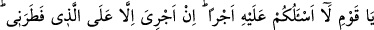

onların onun sözünü en iyi anlayan; doğru ve emin olduğunu en iyi bilen, peşinden
gitmeyi en çok arzulayan kişiler olmalarından ileri gelmiştir.
Denilir ki Hud (a.s.) kendi kavminin memleketinde onların putlarından uzak durup
Allah’a kulluk ederek kırk sene yaşadı. Sonunda Cebrail (a.s.) Hud (a.s.)’a
Âdoğulları’na peygamber olma görevini getirdi. O da onların yanına gitti. Âdoğulları
ahkafta, yani dağlarda ve yaylalarda dağınık vaziyette yaşarlardı. Hud (a.s.) onları
Allah’a kulluk etmeye ve putlara tapmayı bırakmaya dâvet etti. Nitekim Allah Teâlâ
şöyle buyuruyor:
“Dedi ki:” Bu cümle başlangıç cümlesidir. Sanki: “Onlara ne söyledi?” diye
sorulmuş, cevap olarak “Dedi ki: …” buyrulmuştur.
“Ey kavmim,” sadece “Allah’a kulluk edin.” Çünkü “Sizin O’ndan başka tanrınız
yoktur.” Şu halde ibâdeti ona tahsis edin ve hiçbir şeyi O’na ortak koşmayın. “Siz,
yalan uyduranlardan başkası değilsiniz.” Bu putları Allah’ın ortakları edinerek O’na
yalan uydurup iftirâ etmekten başka bir şey yapmıyorsunuz.
et-Te’vîlâtü’n-Necmiyye’de şöyle denilir: “Hud ile kalbe, Âd ile de nefse ve nefsin
sıfatlarına işaret edilmektedir. Çünkü kalb, nefis Âd’ının kardeşidir. Her ikisi de
Ruh’un kalıpla/bedenle birleşmesinden doğmuşlardır. Buna göre âyetin mânâsı şöyle
olur: ‘Ruh Nuh’unu kavmine gönderdiğimiz gibi kalp Hud’unu da nefis Âd’ına
gönderdik. Bu mânâya göre Allah Teâlâ, tıpkı Ruh gibi kalbin de Hakk’ın feyzini kabul
edici olduğuna işâret ediyor.
“Dedi ki: “Ey kavmim, Allah ’a kulluk edin” ifâdesi, nefsin ve sıfatlarının Hakk’a
kulluk etmeye ve O’nu istemeye yönelmelerine işâret ediyor. “Sizin O’ndan başka
tanrınız yoktur.” Yani sizin mâbûdunuz, mahbûbunuz ve matlûbunuz olmaya lâyık
O’ndan başka hiçbir şey yoktur. Nefsânî arzularınızı ve dünyayı mâbud ve matlûb haline
getirmek sûretiyle “Siz, yalan uyduranlardan başkası değilsiniz.”
51. “Ey kavmim, ben sizden bunun için bir ücret istemiyorum. Benim ücretim beni
yaratana aittir. Aklınızı kullanıyor musunuz!”
“Ey kavmim, ben sizden bunun için” yani peygamberlik görevimi tebliğ etmek
karşılığında “bir ücret” mükâfât ve rüşvet “istemiyorum.” Yani, sizin mallarınızda
gözüm yok. “Benim ücretim beni yaratana âiddir.” Âyette Allah’ın sıfatı olarak
yaratma fiilinin seçilmesi, Allah Teâlâ tarafından bahşedilen ve şükrü gerektiren
nimetlerin en eskisinin yaratma nimeti olduğu içindir. “Hâlâ aklınızı kullanmıyor
musunuz?” Bu kıssadan gafil olup da onun üzerinde kafa yormuyor musunuz?!